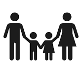
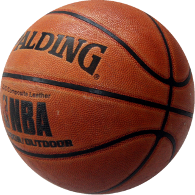

On this website, you will be learning about three things that I care about.
The three things I will be telling you about are:
One thing that is very important to me is my family. This is because they are always they are always there for me. I've learned a lot of lessons from them. I like spending time with them doing activities and talking. I feel the most comftorable around them. Thats why family is one of the most important things to me.

Basketball is another thing I care about. I like playing it with friends to have fun and past time. It also keeps me in shape and overall is one of my favorite sports.

Although I hate waking up so early in the morning, I know that school is very important. It has allowed me to learn a lot of new things and also meet new people and make friends.

| Topic | Reasoning |
|---|---|
| Family | I put family first because I care about it the most and I think anyone else would make the same decision too. |
| School | Even though I like basketball a lot, I put school above basketball because I know it is more important because it has helped me way more. |
| Basketball | I put basketball last because although I like playing it a lot, school and family are more important to me because both of those are important in my future |